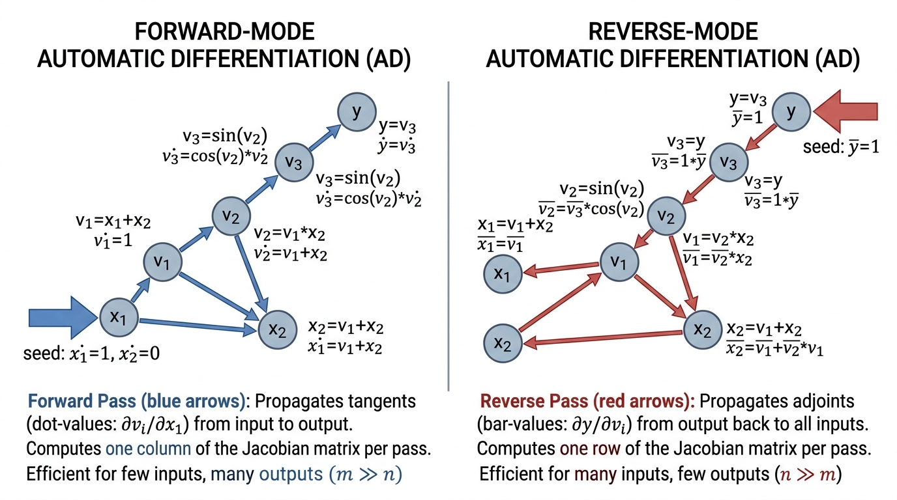

Suppose you need the gradient of a weather model with a million input variables, but computing each partial derivative means re-running the entire forecast from scratch: that is a million extra simulations, and you need the answer before tomorrow's deadline. Automatic differentiation (AD) eliminates this bottleneck by mechanically applying the chain rule to every elementary operation in a computer program, producing machine-precision derivatives at a cost proportional to a single run. Unlike symbolic differentiation (which produces unwieldy expressions) and finite differences (which suffer from truncation and rounding errors), AD scales gracefully to programs of arbitrary complexity. The development proceeds from first principles: dual numbers for forward mode, adjoint accumulation for reverse mode, and the transposed-JVP perspective that unifies both. Understanding these mechanics is essential before we compose JAX transforms in Section 42.2 and differentiate through physics engines in Section 42.3.
1. Why Not Finite Differences?
The simplest way to estimate a derivative is the finite difference approximation:
$$\frac{\partial f}{\partial x_i} \approx \frac{f(x + h\, e_i) - f(x)}{h}$$where \(e_i\) is the \(i\)-th unit vector and \(h\) is a small step size. This works, but it has two fundamental problems. First, computing the full gradient of \(f: \mathbb{R}^n \to \mathbb{R}\) requires \(n+1\) function evaluations. For a force field with thousands of parameters or a neural network with millions, this cost is prohibitive. Second, the approximation is inherently noisy: too large an \(h\) introduces truncation error, while too small an \(h\) amplifies floating-point rounding error. The sweet spot depends on both the function and the arithmetic precision, making finite differences unreliable for sensitive scientific computations.
Automatic differentiation eliminates both problems. It computes exact derivatives (to machine precision) and, in reverse mode, computes the full gradient in time proportional to a small constant multiple of the original function evaluation, regardless of \(n\). In short: AD turns the chain rule into a compiler pass, delivering exact gradients as a by-product of running the program itself.
What AD Is and When to Use It
When a satellite drag model needs recalibrating, engineers must compute the gradient of a trajectory mismatch with respect to hundreds of atmospheric coefficients; doing this by finite differences means re-running the entire orbit propagation once per coefficient, turning a feasible overnight job into one that would take weeks. Automatic differentiation collapses that cost to a single backward pass.
Automatic differentiation (AD) computes derivatives of numerical programs by decomposing them into elementary operations (addition, multiplication, \(\sin\), \(\exp\)) and applying the chain rule to each operation in turn. Among general-purpose differentiation strategies, AD is unique in simultaneously delivering machine-precision derivatives and bounded computational overhead. This combination makes AD the backbone of gradient-based optimization in machine learning, scientific simulation, and engineering design. The core mechanism augments every floating-point operation with a companion derivative operation, computing the derivative as a by-product of the original execution. Prefer AD over symbolic differentiation when a function is defined as code rather than a closed-form expression. Prefer it over finite differences when precision matters or when the input dimension makes per-component perturbation expensive.
Symbolic differentiation manipulates mathematical expressions (like a computer algebra system, or CAS), producing exact but potentially enormous derivative expressions. Finite differences perturb inputs and measure output changes, giving approximate derivatives cheaply per component but scaling linearly with input dimension. Automatic differentiation augments the original computation with derivative-tracking operations, producing exact derivatives at bounded overhead. For scientific discovery, where we need to differentiate through complex simulations with many parameters, AD is the only practical choice.
2. Forward Mode: Dual Numbers and JVPs
Forward-mode AD propagates derivatives alongside values through a computation. The key abstraction is the dual number: a pair \((v, \dot{v})\) where \(v\) is the primal value (the original quantity being computed) and \(\dot{v}\) is the tangent (derivative with respect to some input). Every elementary operation lifts naturally to dual numbers. For addition:
$$(a, \dot{a}) + (b, \dot{b}) = (a + b, \dot{a} + \dot{b})$$For multiplication:
$$(a, \dot{a}) \times (b, \dot{b}) = (a \times b, a \dot{b} + b \dot{a})$$These rules are just the familiar product rule and sum rule of calculus, applied mechanically. By seeding one input \(x_i\) with tangent \(\dot{x}_i = 1\) and all other inputs with tangent \(0\), a single forward pass produces both the function value and the partial derivative \(\partial f / \partial x_i\).
Let us implement this from scratch, without any AD library, to expose the mechanism.
import math
class Dual:
"""A dual number (value, tangent) for forward-mode AD."""
def __init__(self, value: float, tangent: float = 0.0):
self.value = value
self.tangent = tangent
def __add__(self, other):
other = other if isinstance(other, Dual) else Dual(other)
return Dual(self.value + other.value,
self.tangent + other.tangent)
def __radd__(self, other):
return Dual(other).__add__(self)
def __mul__(self, other):
other = other if isinstance(other, Dual) else Dual(other)
return Dual(self.value * other.value,
self.value * other.tangent + self.tangent * other.value)
def __rmul__(self, other):
return Dual(other).__mul__(self)
def __sub__(self, other):
other = other if isinstance(other, Dual) else Dual(other)
return Dual(self.value - other.value,
self.tangent - other.tangent)
def __rsub__(self, other):
return Dual(other).__sub__(self)
def __truediv__(self, other):
other = other if isinstance(other, Dual) else Dual(other)
return Dual(
self.value / other.value,
(self.tangent * other.value - self.value * other.tangent)
/ (other.value ** 2)
)
def __pow__(self, n):
# Only integer/float exponents for simplicity
return Dual(self.value ** n,
n * self.value ** (n - 1) * self.tangent)
def __repr__(self):
return f"Dual({self.value}, {self.tangent})"
def dual_sin(x: Dual) -> Dual:
return Dual(math.sin(x.value), math.cos(x.value) * x.tangent)
def dual_exp(x: Dual) -> Dual:
e = math.exp(x.value)
return Dual(e, e * x.tangent)
# Example: f(x) = sin(x^2) * exp(x) at x = 1.5
# Seed x with tangent = 1 to get df/dx
x = Dual(1.5, 1.0)
result = dual_sin(x ** 2) * dual_exp(x)
print(f"f(1.5) = {result.value:.10f}")
print(f"f'(1.5) = {result.tangent:.10f}")
# Verify against finite differences
import numpy as np
h = 1e-7
f = lambda x: np.sin(x**2) * np.exp(x)
fd_deriv = (f(1.5 + h) - f(1.5)) / h
print(f"f'(1.5) [finite diff] = {fd_deriv:.10f}")
# Output:
# f(1.5) = 4.2890498995
# f'(1.5) = -6.5578889413
# f'(1.5) [finite diff] = -6.5578886498
x with tangent 1.0 produces the exact derivative of sin(x^2) * exp(x) alongside the function value in a single pass.The dual number approach computes a Jacobian-vector product (JVP), where the Jacobian \(J \in \mathbb{R}^{m \times n}\) is the matrix of all partial derivatives of a function \(f: \mathbb{R}^n \to \mathbb{R}^m\) (each entry \(J_{ij} = \partial f_i / \partial x_j\)). Seeding the input with a tangent vector \(\dot{x} \in \mathbb{R}^n\) produces \(J \dot{x} \in \mathbb{R}^m\): the directional derivative along \(\dot{x}\). One forward pass computes one column of the Jacobian (by setting \(\dot{x} = e_i\)). For a function with \(n\) inputs and \(m\) outputs, computing the full Jacobian requires \(n\) forward passes. This makes forward mode efficient when \(n\) is small (few inputs, many outputs).
Mental Model
Think of forward-mode AD as filling out a tax form line by line. Each line's value depends on earlier lines, and you carry a running derivative ("if my income changed by \$1, how would this line change?") forward through the form alongside the actual numbers. By the time you reach the final line (tax owed), you know exactly how sensitive it is to that one input. Reverse-mode AD works like an auditor starting from the final tax owed and tracing backward through each line, asking "which earlier lines contributed to this amount and by how much?" One backward pass from the final line reveals the sensitivity to every input line at once. The forward approach is efficient when you have few inputs to trace; the backward approach is efficient when you have few outputs to audit.
3. Reverse Mode: Adjoints and VJPs
Reverse-mode AD is the algorithm behind backpropagation. Where forward mode propagates tangents from inputs to outputs, reverse mode propagates adjoints (also called cotangents or sensitivities; "cotangent" because the adjoint lives in the dual vector space of the output, mapping output perturbations back to input sensitivities) from outputs back to inputs. An adjoint \(\bar{v}\) of an intermediate variable \(v\) represents the derivative of the final output with respect to \(v\) (that is, \(\bar{v} = \partial L / \partial v\) for a scalar loss \(L\)). The key operation is the vector-Jacobian product (VJP): given an adjoint vector \(\bar{y} \in \mathbb{R}^m\) at the output, reverse mode computes \(\bar{x} = J^T \bar{y} \in \mathbb{R}^n\), which is the gradient of a scalar loss \(L = \bar{y}^T f(x)\) with respect to all \(n\) inputs.
Critically, one reverse pass computes one row of \(J^T\) (equivalently, one row of the full gradient). For a scalar-valued function \(f: \mathbb{R}^n \to \mathbb{R}\), a single reverse pass produces the entire gradient \(\nabla f \in \mathbb{R}^n\). This is why training a neural network with millions of parameters is feasible: in practice, the gradient computation typically costs roughly 2 to 4 times the forward pass, regardless of parameter count.
Common Misconception
A frequent misconception is that reverse-mode AD (backpropagation) computes approximate derivatives, similar to finite differences but faster. This is incorrect: reverse-mode AD computes exact derivatives to machine precision, just as forward-mode AD does. Both modes mechanically apply the chain rule to every elementary operation; they differ only in the direction of accumulation (forward vs. backward through the computational graph), not in accuracy.
The relationship between forward and reverse mode has an elegant linear-algebraic interpretation. Forward mode computes \(J \dot{x}\) (Jacobian times tangent vector). Reverse mode computes \(J^T \bar{y}\) (transposed Jacobian times adjoint vector). Every JVP rule for an elementary operation has a corresponding VJP rule that is its transpose. For addition \(z = x + y\), the JVP is \(\dot{z} = \dot{x} + \dot{y}\) and the VJP distributes the adjoint: \(\bar{x} = \bar{z},\; \bar{y} = \bar{z}\). For multiplication \(z = x \cdot y\), the JVP is \(\dot{z} = y\dot{x} + x\dot{y}\) and the VJP is \(\bar{x} = y \bar{z},\; \bar{y} = x \bar{z}\). Understanding this transpose relationship is essential for deriving adjoint methods for differential equations in Section 42.3.
To implement reverse mode, we record a computational graph (the "tape," a data structure that logs each operation and its inputs during the forward pass so the backward pass can retrace them) during the forward pass, then walk it backwards accumulating adjoints. Here is a minimal implementation:
class Var:
"""A traced variable for reverse-mode AD."""
def __init__(self, value: float, children=(), grad_fns=()):
self.value = value
self.children = children # parent Var nodes
self.grad_fns = grad_fns # one function per child
self.grad = 0.0 # accumulated adjoint
def __add__(self, other):
other = other if isinstance(other, Var) else Var(other)
return Var(self.value + other.value,
children=(self, other),
grad_fns=(lambda g: g, lambda g: g))
def __mul__(self, other):
other = other if isinstance(other, Var) else Var(other)
# Capture values for the backward pass
sv, ov = self.value, other.value
return Var(self.value * other.value,
children=(self, other),
grad_fns=(lambda g, o=ov: g * o,
lambda g, s=sv: g * s))
def __sub__(self, other):
other = other if isinstance(other, Var) else Var(other)
return Var(self.value - other.value,
children=(self, other),
grad_fns=(lambda g: g, lambda g: -g))
def __pow__(self, n):
v = self.value
return Var(v ** n,
children=(self,),
grad_fns=(lambda g, v=v, n=n: g * n * v ** (n - 1),))
def __radd__(self, other):
return Var(other).__add__(self)
def __rmul__(self, other):
return Var(other).__mul__(self)
def backward(self):
"""Reverse-mode sweep: accumulate adjoints via topological order."""
topo_order = []
visited = set()
def build_topo(node):
if id(node) not in visited:
visited.add(id(node))
for child in node.children:
build_topo(child)
topo_order.append(node)
build_topo(self)
self.grad = 1.0 # seed: dL/dL = 1
for node in reversed(topo_order):
for child, grad_fn in zip(node.children, node.grad_fns):
child.grad += grad_fn(node.grad)
# Example: f(x, y) = (x*y + x^2) at x=3, y=4
# Analytic: df/dx = y + 2x = 10, df/dy = x = 3
x = Var(3.0)
y = Var(4.0)
z = x * y + x ** 2
z.backward()
print(f"f(3, 4) = {z.value}") # 24.0
print(f"df/dx = {x.grad}") # 10.0
print(f"df/dy = {y.grad}") # 3.0
backward() call from the output computes gradients of x*y + x^2 with respect to both x and y simultaneously.The Lennard-Jones potential \(V(r) = 4\epsilon\left[(\sigma/r)^{12} - (\sigma/r)^6\right]\) models van der Waals interactions between atoms. In forward-mode AD, computing \(\partial V / \partial \epsilon\) and \(\partial V / \partial \sigma\) requires two passes (one per parameter). In reverse mode, both gradients come from a single backward pass. For a system of \(N\) atoms with \(N(N-1)/2\) pair interactions, reverse mode computes the gradient of the total energy with respect to all parameters in time proportional to one energy evaluation, rather than scaling with parameter count. When we build the full differentiable force field in Section 42.4, this cost advantage is what makes gradient-based calibration feasible.
4. Forward vs. Reverse: The Cost Calculus
The computational cost of AD depends on the shape of the Jacobian. Consider a function \(f: \mathbb{R}^n \to \mathbb{R}^m\) with Jacobian \(J \in \mathbb{R}^{m \times n}\).
- Forward mode computes one column of \(J\) per pass (one JVP). Cost for the full Jacobian: \(O(n)\) forward passes.
- Reverse mode computes one row of \(J\) per pass (one VJP). Cost for the full Jacobian: \(O(m)\) reverse passes.
The rule of thumb: use forward mode when \(n \ll m\) (few inputs, many outputs) and reverse mode when \(m \ll n\) (few outputs, many inputs). For the dominant use case in scientific discovery, computing the gradient of a scalar loss with respect to many parameters (\(m = 1\), \(n\) large), reverse mode wins decisively. This is why backpropagation (reverse-mode AD) is the workhorse of deep learning and differentiable simulation.
When both \(n\) and \(m\) are large, neither mode alone is optimal for the full Jacobian.
Mixed-mode AD (which selects forward mode along dimensions where \(n\) is smaller and reverse mode where \(m\) is smaller) computes the Jacobian in \(\min(n, m)\) passes by choosing
the cheaper direction for each block. JAX supports both modes seamlessly: jax.jvp for
forward mode and jax.grad (built on jax.vjp) for reverse mode.
Checkpoint
So far: AD mechanizes the chain rule in two complementary modes. Forward mode (dual numbers, JVPs) is cheap when inputs are few; reverse mode (adjoints, VJPs) is cheap when outputs are few; and mixed mode picks the better direction per block to handle cases where both dimensions are large.
5. The Computational Graph Perspective
Both forward and reverse mode can be understood through the lens of computational graphs. Consider a function decomposed into elementary operations:
$$v_0 = x, \quad v_1 = g_1(v_0), \quad v_2 = g_2(v_1, v_0), \quad \ldots, \quad v_k = f(x)$$The chain rule gives:
$$\frac{df}{dx} = \frac{\partial g_k}{\partial v_{k-1}} \cdot \frac{\partial g_{k-1}}{\partial v_{k-2}} \cdots \frac{\partial g_1}{\partial v_0}$$Forward mode evaluates this product left-to-right (from inputs toward outputs). Reverse mode evaluates it right-to-left (from outputs toward inputs). Neither mode forms the intermediate Jacobians explicitly; instead, each mode accumulates matrix-vector products one factor at a time. Figure 42.1 illustrates this distinction on a small computational graph for \(f(x, y) = (x + y) \cdot x\). Figure 42.1.1 illustrates forward-mode vs reverse-mode AD on a computational graph.

For a chain of \(k\) operations each with Jacobian of size \(d \times d\), both modes cost \(O(k d^2)\) to evaluate the full Jacobian. The difference appears when the dimensions are not uniform: reverse mode shines for "fan-in" graphs (many inputs converge to one output), while forward mode shines for "fan-out" graphs (one input diverges to many outputs).
Beyond first-order gradients, many scientific applications require curvature information to distinguish saddle points from minima or to accelerate convergence, and AD provides an elegant route to these higher-order quantities.
6. Higher-Order Derivatives
AD modes compose. Computing a Hessian-vector product \(H v = \nabla^2 f \cdot v\) (where \(H = \nabla^2 f\) is the Hessian, the matrix of second partial derivatives with entry \(H_{ij} = \partial^2 f / \partial x_i \partial x_j\)) can be done by applying forward mode to a reverse-mode gradient computation. Concretely, if \(g(x) = \nabla f(x)\) is computed by reverse mode, then a forward-mode JVP of \(g\) along direction \(v\) gives \(Hv\). This costs roughly twice a gradient evaluation, regardless of dimension, and never forms the full \(n \times n\) Hessian matrix.
import jax
import jax.numpy as jnp
def rosenbrock(xy):
"""Rosenbrock function: a classic optimization test case."""
x, y = xy
return (1.0 - x) ** 2 + 100.0 * (y - x ** 2) ** 2
# Gradient (reverse mode)
grad_fn = jax.grad(rosenbrock)
# Hessian-vector product (forward-over-reverse)
def hvp(f, x, v):
"""Hessian-vector product via forward-over-reverse mode."""
return jax.jvp(jax.grad(f), (x,), (v,))[1]
x0 = jnp.array([1.0, 1.0])
v = jnp.array([1.0, 0.0])
print(f"Gradient at (1,1): {grad_fn(x0)}")
print(f"Hessian-vector product H @ [1,0]: {hvp(rosenbrock, x0, v)}")
# Full Hessian (for comparison; expensive for large n)
hessian_fn = jax.hessian(rosenbrock)
H = hessian_fn(x0)
print(f"Full Hessian:\n{H}")
print(f"H @ [1,0] directly: {H @ v}")
# Output:
# Gradient at (1,1): [0. 0.]
# Hessian-vector product H @ [1,0]: [802. -400.]
# Full Hessian:
# [[ 802. -400.]
# [-400. 200.]]
# H @ [1,0] directly: [802. -400.]
hvp function nests jax.jvp around jax.grad, costing roughly 2x a gradient computation without forming the full Hessian matrix.
Our manual Dual and Var classes took about 100 lines each. In
JAX, the same operations are single function calls: jax.grad(f) for the
gradient, jax.jacfwd(f) for the forward-mode Jacobian,
jax.jacrev(f) for the reverse-mode Jacobian, jax.hessian(f)
for the full Hessian, and jax.jvp/jax.vjp for explicit JVP/VJP
operations. JAX traces your Python function once to build a computational graph
(using the Accelerated Linear Algebra (XLA) compiler intermediate representation), then differentiates that graph.
The user never writes derivative rules; JAX has rules for every operation in
jax.numpy and jax.scipy. What took us 100 lines to implement
for a handful of operations, JAX handles for the full NumPy API.
7. Checkpointing and Memory Trade-offs
Reverse-mode AD must store intermediate values from the forward pass to use during the backward pass. For a computation with \(k\) steps, this requires \(O(k)\) memory. In a long simulation (thousands of time steps), this can exhaust graphics processing unit (GPU) memory. The standard solution is gradient checkpointing (also called rematerialization): store only a subset of intermediate values, then recompute the others during the backward pass.
With \(\sqrt{k}\) checkpoints evenly spaced through the computation, the memory cost
drops to \(O(\sqrt{k})\) at the expense of roughly one additional forward pass. This
trade-off is formalized by the revolve algorithm (Griewank, 1992, with the optimal binomial checkpointing schedule, so called because the number of recomputations follows binomial coefficients that minimize total work for a given memory budget; Griewank and Walther published the revolve implementation as ACM Algorithm 799 in 2000). JAX supports
checkpointing through jax.checkpoint (also called jax.remat):
import jax
@jax.checkpoint
def expensive_layer(x, params):
"""A computation whose intermediates are not stored during
the forward pass; they are recomputed during backprop."""
for w in params:
x = jax.nn.relu(x @ w)
return x
# When used inside a jax.grad computation, this layer's
# intermediates are recomputed rather than stored, reducing
# peak memory from O(num_layers * layer_size) to O(layer_size).
jax.checkpoint applied to a multi-layer ReLU network. Intermediates inside the decorated function are recomputed during backpropagation instead of stored, trading one extra forward pass for \(O(\sqrt{k})\) memory.Checkpointing becomes critical in Section 42.3 when we backpropagate through molecular dynamics trajectories with thousands of time steps. The adjoint method we derive there provides an even more memory-efficient alternative for ordinary differential equation (ODE)-constrained problems.
With the core algorithms and their memory management strategies established, the remaining question is how real-world software systems implement these ideas in practice.
8. AD in the Wild: Systems and Trade-offs
Modern AD systems fall into two broad categories. Operator overloading
systems (PyTorch, our Var class) build the computational graph dynamically
during execution. They handle control flow (if/else, while loops) naturally because the
graph reflects the specific execution path taken. Source transformation
systems (Tapenade, some modes of JAX) analyze the program structure ahead of time and
generate derivative code. They can optimize across operations but struggle with
data-dependent control flow.
JAX occupies a middle ground: it traces Python functions into a functional
representation (an XLA High-Level Operations (HLO) graph) and differentiates that graph. This design
combines the cross-operation optimization of source transformation with Python control
flow support via jax.lax.cond and jax.lax.scan. The trade-off
is a functional constraint (no side effects, no in-place mutation) that pays dividends
when we stack transforms in Section 42.2.
Different scientific communities have adopted different AD tools based on their needs. Computational chemistry uses JAX-MD and TorchMD-Net for differentiable molecular dynamics. Computational fluid dynamics uses dolfin-adjoint (built on FEniCS; as of 2024, the project continues as pyadjoint and supports the newer DOLFINx finite-element backend) for partial differential equation (PDE)-constrained optimization. Robotics uses Drake and differentiable-robot-model for differentiable rigid-body dynamics. Climate science uses Oceananigans.jl with Enzyme.jl for differentiable ocean simulations. Despite the variety of tools, the underlying mathematics is the same: forward and reverse mode AD, with checkpointing and adjoint methods for long time-horizon simulations. These underlying principles transfer across all of these domains.
Research Frontier
In 2023, Enzyme 2.0 (Moses et al., "Scalable Automatic Differentiation of Arbitrary LLVM/Multi-Level Intermediate Representation (MLIR)," SC '23) demonstrated AD applied directly at the compiler intermediate representation (IR) level, enabling automatic differentiation of programs written in C, C++, Fortran, Julia, Rust, and other compiled languages without requiring framework-specific rewrites. By operating below the source language, Enzyme can differentiate through existing high-performance simulation codes (including Message Passing Interface (MPI)-parallel and GPU-accelerated programs) that were never designed for AD. This compiler-level approach pushes beyond the tracing and operator-overloading paradigms described in this section, pointing toward a future where any compiled scientific code becomes differentiable by default.
Try It: Build and Compare All Three Differentiation Methods
Test the three differentiation approaches on a single function using only Python and JAX.
(1) Define a target function, such as \(f(x) = x^3 \sin(x)\), and compute its analytic derivative by hand: \(f'(x) = 3x^2 \sin(x) + x^3 \cos(x)\).
(2) Implement finite-difference differentiation: evaluate \((f(x+h) - f(x))/h\) for \(h = 10^{-2}, 10^{-5}, 10^{-8}, 10^{-12}\) at \(x = 2.0\) and record the error relative to the analytic answer.
(3) Implement the Dual class from Listing 42.1 and compute \(f'(2.0)\) via forward-mode AD; verify the result matches the analytic derivative to machine precision.
(4) Use jax.grad to compute the same derivative and confirm it also matches to machine precision.
(5) Plot the finite-difference error as a function of \(h\) on a log-log scale. You should observe a V-shaped curve: error decreases as \(h\) shrinks (less truncation error), then increases again for very small \(h\) (more rounding error). The AD results, by contrast, sit at machine epsilon regardless of any step-size choice.
Exercise 42.1.1
Extend the Dual class from Listing 42.1 by adding a dual_log(x) function
that computes the natural logarithm and its derivative. Then use it to compute the derivative of
\(f(x) = \ln(x^2 + 1)\) at \(x = 2.0\) via forward-mode AD. Verify your result against the analytic
derivative \(f'(x) = 2x / (x^2 + 1)\), which gives \(f'(2.0) = 0.8\).
Hint
The derivative of \(\ln(u)\) with respect to its argument is \(1/u\). In dual-number arithmetic,
dual_log(Dual(v, t)) should return Dual(math.log(v), t / v). Compose it
with the existing __pow__ and __add__ operations to evaluate \(\ln(x^2 + 1)\).
Step-Through: Forward-Mode AD on a Two-Operation Chain
Trace forward-mode AD through \(f(x) = (x + 1)^2\) at \(x = 3.0\), seed \(\dot{x} = 1.0\).
Step 1: Initialize \(v_0 = (3.0,\; 1.0)\).
Step 2: Compute \(v_1 = v_0 + 1\). Primal: \(3.0 + 1 = 4.0\). Tangent: \(1.0 + 0 = 1.0\). So \(v_1 = (4.0,\; 1.0)\).
Step 3: Compute \(v_2 = v_1^2\). Primal: \(4.0^2 = 16.0\). Tangent: \(2 \times 4.0 \times 1.0 = 8.0\). So \(v_2 = (16.0,\; 8.0)\).
Result: \(f(3) = 16.0\) and \(f'(3) = 8.0\). Verify: \(f'(x) = 2(x+1)\), so \(f'(3) = 2 \times 4 = 8\). Exact match.
Real-World Application: Weather Forecasting
The European Centre for Medium-Range Weather Forecasts (ECMWF) uses adjoint models (reverse-mode AD applied to atmospheric dynamics equations) in its 4D-Var data assimilation system. The adjoint of the forecast model propagates observation misfits backward through 12 hours of simulated weather to compute the gradient of a cost function with respect to millions of initial-condition grid points. A single adjoint run replaces what would otherwise require millions of finite-difference perturbation forecasts, making operational weather prediction with gradient-based optimization feasible on a twice-daily cycle.
The Gradient That Predates Backpropagation by Two Centuries
Reverse-mode AD is often credited to Rumelhart, Hinton, and Williams (1986), but the core idea of propagating sensitivities backward through a chain of computations traces back to Lagrange's method of adjoint equations in the late 1700s. The first explicit description of what we now call reverse-mode AD appeared in Seppo Linnainmaa's 1970 master's thesis at the University of Helsinki, written in Finnish and largely unknown outside Scandinavia for over a decade. By the time the machine learning community rediscovered the algorithm, control theorists and meteorologists had been using adjoint methods for years.
Lab: Finite Differences vs. AD Precision Under Stress
Goal: Empirically measure when finite differences break down and confirm that AD
remains exact, using functions whose derivatives are numerically challenging.
Tools: Python 3, JAX (pip install jax jaxlib).
Procedure (20 minutes):
(1) Define three test functions: \(f_1(x) = e^{10x}\) (large derivative magnitudes),
\(f_2(x) = \sin(1/x)\) near \(x = 0.01\) (rapid oscillation), and \(f_3(x) = (x - 1)^{10}\)
near \(x = 1.0\) (near-zero derivative with cancellation).
(2) For each function, compute the derivative via jax.grad and via central
finite differences \((f(x+h) - f(x-h)) / 2h\) for \(h\) values from \(10^{-1}\) down to \(10^{-15}\).
(3) Plot the relative error of the finite-difference estimate (compared to the JAX result) as a
function of \(h\) on a log-log scale.
What to vary: Try both float32 and float64 precision to
see how the rounding-error floor shifts.
What to observe: Each function exhibits a different "sweet spot" \(h\) and a
different error floor, while the AD result is consistently at machine epsilon. The pathological
functions (\(f_2\), \(f_3\)) reveal failure modes where no choice of \(h\) gives even three correct digits.
Bibliography
Core References
Comprehensive survey covering forward mode, reverse mode, implementation strategies, and higher-order differentiation. The primary reference for this section.
The definitive textbook on AD theory. Chapter 12 covers optimal checkpointing schedules (the revolve algorithm).
The earliest published description of forward-mode AD using "Wengert lists" of elementary operations.
Describes the Autograd library, the predecessor to JAX, which pioneered reverse-mode AD for NumPy programs via operator overloading.